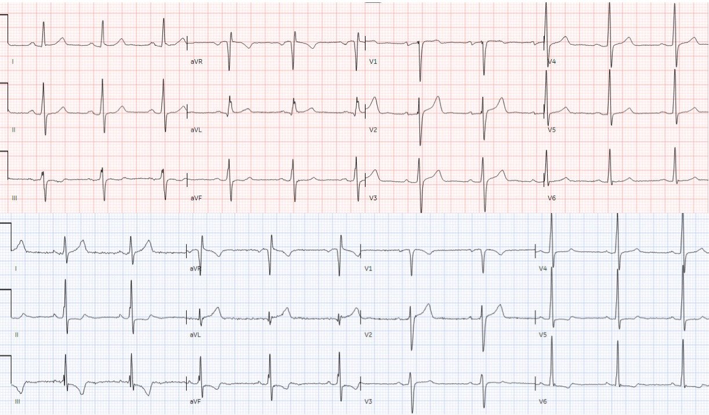
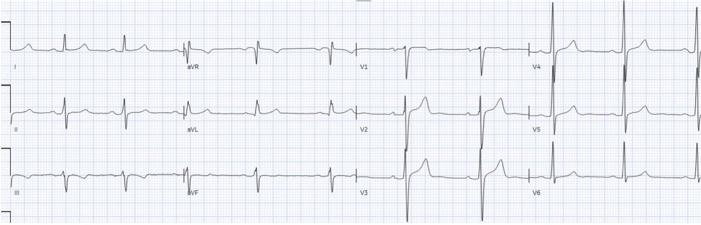
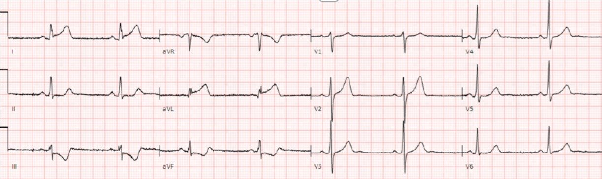
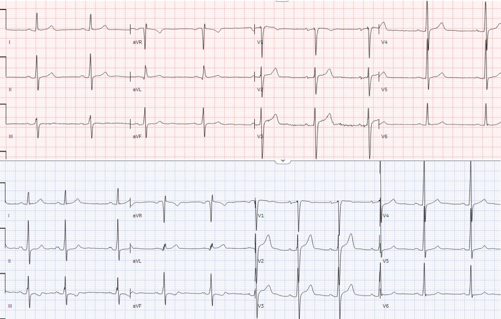
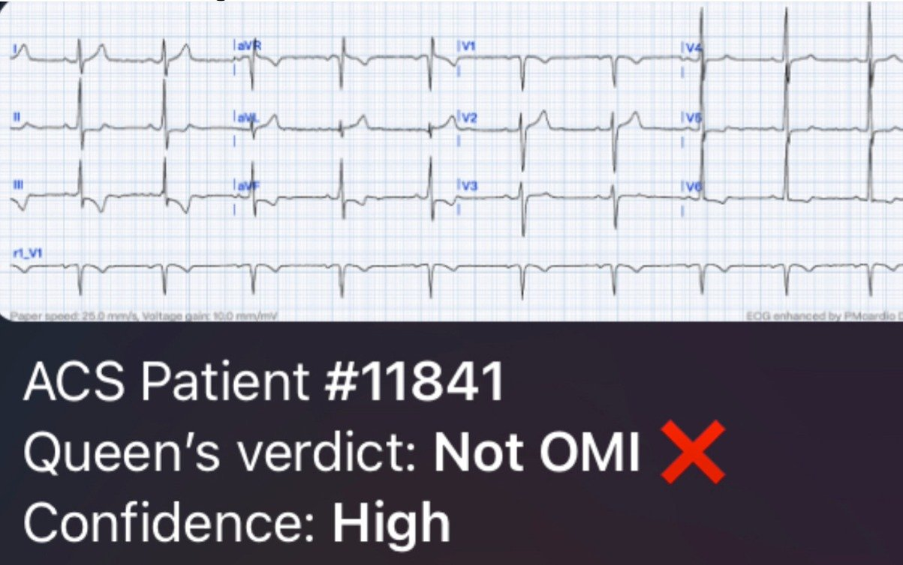

27/11/2023 — Đau ngực và thay đổi điện tâm đồ khu trú/soi gương mới so với các điện tâm đồ trước: báo động STEMI?
Bản dịch tiếng Việt của bài "Chest pain and new regional/reciprocal ECG changes compared to previous ECGs: code STEMI?" – Dr. Smith’s ECG Blog. Giữ nguyên toàn bộ 7 hình ảnh của bản gốc.
Bài viết của Jesse McLaren
Một bệnh nhân 45 tuổi đến khám vì đau ngực tái diễn, không liên quan gắng sức
trong hai tuần, nay đau liên tục đã một giờ. Dưới đây là điện tâm đồ cũ rồi đến điện tâm đồ mới
(cũ ở trên; mới ở dưới). Bạn nghĩ gì?


Cả hai điện tâm đồ đều có nhịp xoang bình thường, dẫn truyền bình thường và
điện thế bình thường. Có sự thay đổi trục, điều này có thể cản trở việc so sánh trực tiếp
từng chuyển đạo với nhau, nhưng dường như có sóng T lớn hơn ở I/aVL và sóng T đảo ngược (TWI) mới
ở III/aVF. Nhưng liệu chúng có biểu hiện tắc mạch vành cấp (acute coronary occlusion) không?
Vì các thay đổi điện tâm đồ ở một bệnh nhân đau ngực, và
vì có giảm động thành dưới-bên trên siêu âm tại giường (POCUS), phòng thông tim (cath lab) đã được kích hoạt. Nhưng
động mạch vành bình thường, và troponin độ nhạy cao đo nhiều lần đều không phát hiện được. Siêu âm
tim chính thức cho thấy EF 55% kèm giảm động nhẹ thành dưới-bên, không có kết quả trước đó để
so sánh. Dựa trên các thay đổi điện tâm đồ và kết quả siêu âm tim, bệnh nhân được chẩn đoán
co thắt mạch vành. Dưới đây là điện tâm đồ lúc ra viện, cho thấy điện tâm đồ
nền mà không có bất kỳ sóng T đảo ngược do tái tưới máu nào.


Cả chẩn đoán lúc nhập viện lẫn chẩn đoán ra viện đều quy các
thay đổi điện tâm đồ và kết quả siêu âm tim cho thiếu máu cục bộ. Nhưng kết quả siêu âm tim có thể đã
có từ trước (đặc biệt khi troponin không phát hiện được), và các thay đổi điện tâm đồ có thể
không do thiếu máu cục bộ. Điều này đặt ra những câu hỏi về sóng T tối cấp và
thay đổi soi gương (reciprocal), về thay đổi điện tâm đồ động (dynamic), và về khả năng nhận diện
những lần kích hoạt phòng thông tim có thể tránh được.
OMI hay không phải OMI: đâu làtối cấp và đâu là thay đổi soi gương?
Chuyển đạo III và aVL soi gương nhau, nên bất kỳ thay đổi ST/sóng T
nào ở chuyển đạo này cũng sẽ tạo ra thay đổi ngược lại ở chuyển đạo kia. Nhưng việc diễn giải đâu là
thay đổi chính và đâu là thay đổi soi gương có thể là một thách thức.
Nhìn lại điện tâm đồ đã dẫn đến việc kích hoạt phòng thông tim, bác sĩ cấp cứu đã diễn giải sóng T cao ở I/aVL
là tối cấp, và do đó sóng T đảo ngược ở các chuyển đạo dưới là thay đổi soi gương. Việc
tìm sóng T tối cấp — cao so với QRS — là đúng, vì
xét theo giá trị tuyệt đối chúng có thể nhỏ ở các chuyển đạo có QRS nhỏ như aVL. Nhưng các sóng
T này không phù hợp với các đặc điểm khác của sóng T tối cấp: đáy rộng,
đối xứng và phồng to, với diện tích dưới đường cong lớn. Ở đây, các sóng T
ở chuyển đạo bên có nhánh lên rất lõm dẫn tới một đỉnh hẹp, với diện tích dưới
đường cong nhỏ. Thay vào đó, chính các chuyển đạo dưới mới có sóng T đảo ngược ngược hướng và không đối xứng,
tương tự hình ảnh tăng gánh kiểu LVH, và điều này tạo ra sóng T cao soi gương
(nhưng không phải tối cấp) ở các chuyển đạo bên cao.
Dưới đây là so sánh với một bệnh nhân bị tắc 100%
nhánh trung gian (ramus), có sóng T tối cấp ở các chuyển đạo bên và ST chênh xuống (STD)/sóng T đảo ngược soi gương ở các chuyển đạo dưới:


Thay đổi điện tâm đồ: do thiếu máu cục bộhay do điện tâm đồ nền dao động
Thách thức khác của ca này là sự thay đổi so với
điện tâm đồ trước đó, điều mà ở một bệnh nhân đau ngực khiến chúng ta nghĩ đến thay đổi
do thiếu máu cục bộ. Nhưng khi xem lại hồ sơ, bệnh nhân đã từng đến khám nhiều lần trước đây vì
nhiều than phiền khác nhau, với các thay đổi điện tâm đồ dao động tương tự như các
thay đổi gần đây, và nồng độ troponin luôn không phát hiện được. Dưới đây là các điện tâm đồ từ hai
lần khám trước, bản ghi trên khi đau ngực và bản ghi dưới khi đau bụng.
Việc so sánh hai điện tâm đồ này cũng có thể bị diễn giải thành các thay đổi “động” (dynamic)
ở thành dưới/bên, trong khi đó thực ra là những dao động của điện tâm đồ nền không liên quan đến
thiếu máu cục bộ


Tương tự, bệnh nhân có tái cực sớm hoặc LVH có thể
có các thay đổi điện tâm đồ dao động theo thời gian, vốn có thể bị diễn giải nhầm thành thay đổi
thiếu máu cục bộ động nếu bệnh nhân đến khám vì đau ngực. Vì lý do này, các điện tâm đồ
trước hết cần được diễn giải riêng rẽ, rồi sau đó mới áp vào bệnh nhân.
Liệu lần kích hoạt phòng thông tim dương tínhgiả này có thể tránh được không?
Vấn đề lớn nhất của tiêu chuẩn STEMI là âm tính giả
– vì điều này làm bệnh nhân mất cơ tim, với tử vong và
bệnh tật cao hơn. Nhưng chi phí nguồn lực của dương tính giả cũng không hề nhỏ, và
mục tiêu lý tưởng là nhận diện được cả các trường hợp âm tính giả cần tái tưới máu
cấp cứu lẫn các trường hợp dương tính giả không cần kích hoạt phòng thông tim. Không nên ngăn việc kích hoạt khi co thắt mạch vành giả dạng OMI, vì đây là một chẩn đoán loại trừ dựa trên chụp mạch vành, nhưng còn co thắt mạch vành như một chẩn đoán hồi cứu dựa trên một điện tâm đồ không hề giống OMI thì sao?
Tôi đã gửi cả hai điện tâm đồ cho Dr. Smith, với thông tin duy nhất
là đây là điện tâm đồ trước đó và điện tâm đồ mới. Bất chấp các thay đổi điện tâm đồ, ông lập tức
trả lời: “không phải OMI.” Tôi cũng gửi điện tâm đồ mới cho ứng dụng Queen of Hearts, và ứng dụng
trả lời giống hệt người thầy của nó: Không phải OMI, độ tin cậy cao.


Bệnh nhân vẫn có thể bị OMI khi không có thay đổi điện tâm đồ –
và triệu chứng thiếu máu cục bộ kèm rối loạn vận động thành khu trú là một lý do
thuyết phục để kích hoạt phòng thông tim. Nhưng việc được trấn an rằng bản thân điện tâm đồ này, xét
riêng rẽ, không biểu hiện tắc mạch vành cấp có lẽ đã khiến người ta cân nhắc lại trước khi
kích hoạt phòng thông tim, và trước khi đưa ra chẩn đoán ra viện.
Việc AI được chuyên gia huấn luyện này được phổ biến rộng rãi có thể
cải thiện đáng kể khả năng nhận diện cả âm tính giả lẫn dương tính
giả, đồng thời cứu vớt cả cơ tim lẫn nguồn lực.
Điều cần nhớ
1.
khi có thay đổi ở các chuyển đạo soi gương nhau,
hãy cân nhắc đâu là thay đổi chính và đâu là thay đổi soi gương:
sóng T tối cấp có thể tạo ra sóng T đảo ngược soi gương, và sóng T đảo ngược có thể tạo ra sóng T
cao soi gương
2.
sóng T tối cấp cao so với QRS
của chúng, đồng thời to bè/phồng to với diện tích dưới đường cong lớn
3.
điện tâm đồ nền có thể dao động theo thời gian, và không nhất thiết
biểu hiện thiếu máu cục bộ động
4.
QoH có thể giúp nhận diện cả âm tính giả
lẫn dương tính giả
Ứng dụng Queen of Hearts PM Cardio hiện đã có mặt tại Liên minh châu Âu (được chứng nhận CE), trên App Store và Google Play.
Với độc giả ở Mỹ, các bạn cần chờ FDA. Nhưng trong lúc chờ đợi:
BẠN CÓ CƠ HỘI ĐƯỢC TRUY CẬP SỚM PM Cardio AI BOT!! (ỨNG DỤNG PM CARDIO OMI AI)
Nếu bạn muốn bot này giúp bạn chẩn đoán sớm OMI và cứu bệnh nhân cùng cơ tim của họ, bạn có thể đăng ký để nhận phiên bản beta sớm của bot tại đây. Bot chưa được phát hành, nhưng đây là cách để bạn có tên trong danh sách.
https://share-eu1.hsforms.com/18cAH0ZK0RoiVG3RjC5dYdwfyfsg (biểu mẫu đăng ký nhận phiên bản beta sớm của bot)

===================================
BÌNH LUẬN CỦA TÔI, bởi KEN GRAUER, MD (27/11/2023):
===================================
Bình luận tuyệt vời của Dr. McLaren — đề cập đến một số khía cạnh thực sự khó khăn trong việc đánh giá điện tâm đồ ở bệnh nhân đến khám vì đau ngực mới xuất hiện. Tôi xin bổ sung những điểm sau vào bài bình luận chu đáo và sâu sắc của Dr. McLaren.
- Rất có khả năng bệnh nhân 45 tuổi trong ca hôm nay sẽ tái phát một hoặc nhiều lần trong tương lai. Với “bộ dữ liệu” tích lũy gồm các điện tâm đồ liên tiếp từ lần nhập viện này — và, từ các lần khám trước — dường như troponin luôn không phát hiện được — và, với kết quả thông tim ở lần nhập viện này không cho thấy bệnh mạch vành đáng kể nào — việc ra quyết định xử trí trong tương lai được đơn giản hóa. Chừng nào troponin còn âm tính và các điện tâm đồ tiếp tục cho thấy hình ảnh biến đổi ST-T tương tự như ở lần nhập viện này — việc thông tim trong tương lai có thể tránh được.
- Phần mô tả của Dr. McLaren về đánh giá điện tâm đồ liên tiếp đối với 2 bản ghi đầu tiên trong ca hôm nay ( = điện tâm đồ “cũ” rồi đến điện tâm đồ “mới”) — là một hình mẫu để các bác sĩ lâm sàng noi theo. Việc so sánh từng chuyển đạo một trở nên dễ dàng hơn rất nhiều nhờ kỹ thuật của Dr. McLaren: đặt 2 điện tâm đồ cần so sánh cạnh nhau. Tôi rất hay thấy các bác sĩ lâm sàng xem trọn 1 bản ghi, không thấy gì — rồi xem trọn bản ghi thứ 2 mà không hề đặt hai bản ghi cạnh nhau. Kỹ thuật sai này khiến việc bỏ sót những thay đổi ST-T “động” tiềm tàng giữa 2 bản ghi này trở nên rất dễ — những thay đổi mà nếu diễn giải riêng rẽ thì sẽ không gợi nghi ngờ.
- Dr. McLaren đã tinh ý chỉ ra sự khác biệt về trục mặt phẳng trán giữa 2 bản ghi đầu tiên — điều phải được tính đến khi đánh giá liệu hình dạng ST-T trên các bản ghi liên tiếp thực sự đã thay đổi hay chỉ đơn giản là khác đi do trục mặt phẳng trán thay đổi. Tôi hoàn toàn đồng ý với Dr. McLaren rằng các thay đổi giữa điện tâm đồ “cũ” và “mới” dường như nhiều hơn mức có thể giải thích chỉ bằng sự dịch chuyển trục mặt phẳng trán.
- Cũng có một số thay đổi ST-T tinh tế cả ở các chuyển đạo trước tim. Trong khi tôi cho rằng những thay đổi nhỏ về hình dạng QRST ở các chuyển đạo V1,V2,V3 trên 2 bản ghi đầu tiên ít có khả năng có ý nghĩa (nếu thực sự có — vì có khác biệt nhẹ về tăng tiến sóng R) — tôi nghĩ rõ ràng đã có sự thay đổi từ sóng T dương ở các chuyển đạo V4,V5,V6 trên bản ghi phía trên — sang ST dẹt, với ST hơi dốc xuống ở chuyển đạo V6 của bản ghi phía dưới, trông điển hình cho “tăng gánh” thất trái (dù không có tiêu chuẩn điện thế của LVH).
- Tôi muốn biết chi tiết siêu âm tim chính thức để xem bệnh nhân này có LVH hay không (theo Dr. McLaren — bệnh nhân có LVH dễ có các thay đổi điện tâm đồ dao động theo thời gian, vốn dễ bị diễn giải nhầm thành thay đổi thiếu máu cục bộ động). Xin nói thêm bên lề — thỉnh thoảng tôi vẫn thấy “tăng gánh” thất trái ở những bệnh nhân có LVH được xác nhận bằng siêu âm tim nhưng không thỏa tiêu chuẩn điện thế LVH.
- Cuối cùng — tôi nghĩ cần chỉ ra rằng tuy các điện tâm đồ liên tiếp trong ca hôm nay không gợi ý OMI cấp — không điện tâm đồ nào “bình thường”. Quyết định “tức thì” thiết yếu cần đưa ra ở “thời điểm ban đầu” (zero time) tại khoa cấp cứu là có cần thông tim và tái tưới máu kịp thời hay không. Dù vậy — tôi thích tìm lời giải thích cho việc TẠI SAO một điện tâm đồ nhất định lại trông như vậy ở bệnh nhân đến khám vì đau ngực. Bệnh nhân hôm nay rõ ràng có hình dạng ST-T thay đổi theo thời gian — và, dù động mạch vành bình thường và EF khá tốt ~55% trên siêu âm tim chính thức — vẫn có ít nhất giảm động nhẹ thành dưới-bên. Có thể trong ca này không tìm được lời giải thích thỏa đáng nào ngoài việc xác định là “không do thiếu máu cục bộ” — nhưng thông tin bổ sung có thể giúp hiểu sâu hơn.
- ĐIỀU CỐT LÕI: Sự tự tin của chúng ta quả thực được tăng thêm nhờ ca hôm nay rằng những lần khám trong tương lai của bệnh nhân này với bệnh sử tương tự, troponin âm tính và các biến đổi tương tự trên các bản ghi liên tiếp — sẽ không gợi ý OMI (và sẽ không cần thông tim). Dù vậy — NẾU tôi được giao đánh giá một bệnh nhân 45 tuổi đau ngực không liên quan gắng sức 2 tuần nay, giờ đau liên tục — với giảm động thành dưới-bên trên POCUS và các bản ghi ban đầu và trước đó tương tự như được trình bày ở đầu ca hôm nay, mà không có lợi thế từ các lần khám trước với điện tâm đồ cũ để so sánh — tôi sẽ khó mà chắc chắn 100% rằng hình ảnh điện tâm đồ với các thay đổi ST-T liên tiếp không phải do thiếu máu cục bộ. Dù “giả” (fake) thay vì OMI có vẻ là cách diễn giải khả dĩ hơn (theo Dr. McLaren, Dr. Smith và kết quả “không phải OMI” của QOH) — có lẽ tôi vẫn nghiêng về thông tim để chắc chắn (với hiểu biết rằng việc thông tim xác định giải phẫu sẽ giúp việc ra quyết định trong tương lai dễ dàng và nhanh chóng hơn, và tránh phải thông tim lại ở các lần khám sau).
Ca bệnh TUYỆT VỜI của Dr. McLaren!